Apresentação do sistema
Gestão do escritório de topografia
Do orçamento ao memorial descritivo, com a planta pronta para o AutoCAD. Feito sob medida para a Agrosat, há 27 anos prestando serviços em Cascavel e região.
Conteúdo
O que você vai ver
A solução
Um sistema só para o escritório inteiro
No escritório
Orçamentos com lucro estimado, ordens de serviço por etapa, clientes, protocolos e financeiro, tudo ligado.
No campo
Agenda da equipe e dos equipamentos, calibração vencendo e a OS aberta no celular com o que levar.
Nos documentos
As coordenadas viram área, croqui, memorial descritivo e planta DXF para o AutoCAD, sem redigitar nada.
Painel do escritório
O dia a dia em uma tela
- Serviços por etapa do aguardando campo ao concluído
- Prazos de entrega com os atrasados em vermelho
- Campo dos próximos 7 dias equipe, veículo e equipamentos
- Resultado do mês e contas vencidas sem abrir planilha
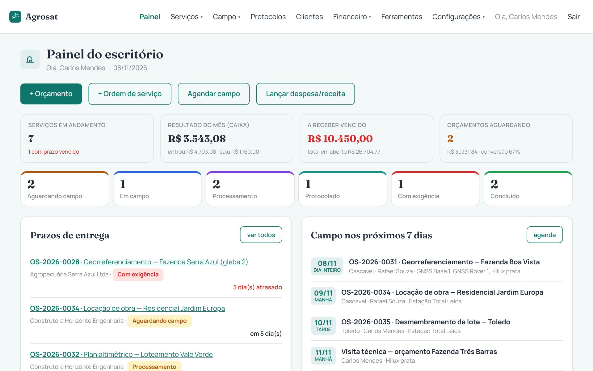
Orçamento e proposta
Do cálculo ao PDF
- Diárias, km, equipamentos, horas de escritório e taxas com os valores da Agrosat
- Honorários por tipo de serviço e por hectare
- Margem, impostos e lucro estimado antes de enviar
- Proposta pronta para imprimir ou mandar no WhatsApp
- Aprovou? vira OS e lança as parcelas a receber
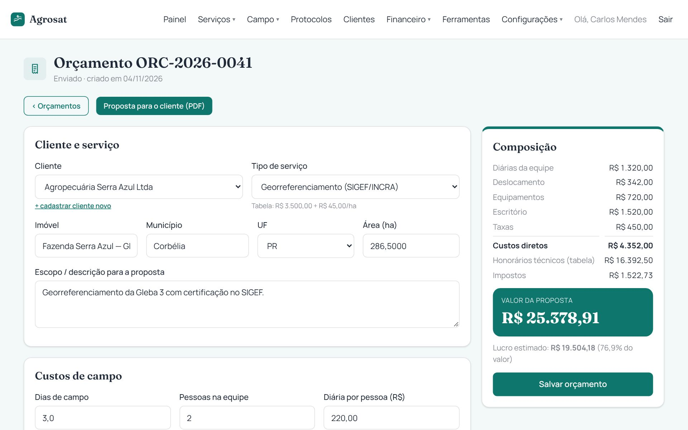
Ordens de serviço
Cada trabalho no seu lugar
- Quadro por etapa: aguardando campo, em campo, processamento, protocolado, exigência, concluído
- Dados do imóvel: matrícula, cartório, CCIR, CAR, datum e fuso
- Histórico de tudo que aconteceu com data e responsável
- Financeiro e protocolos da OS na mesma tela
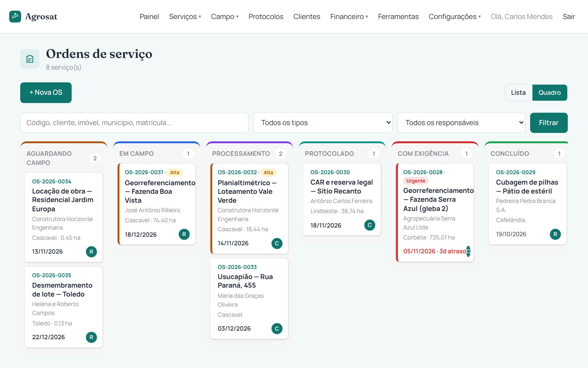
Agenda de campo
Equipe e equipamentos sem conflito
- Semana da equipe manhã, tarde ou dia inteiro
- Reserva de GNSS, estação total, drone e veículo com aviso se já estiver ocupado
- Calibração e manutenção vencendo aparecem no painel
- Marcou "feito"? a OS vai para processamento
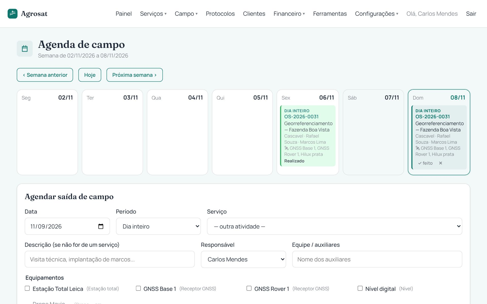
Vértices e área
Cole as coordenadas, o resto é com o sistema
Cole direto do Excel, do relatório do GNSS ou do Civil 3D. O sistema calcula na hora a área, o perímetro, os azimutes e as distâncias de cada lado e desenha o croqui.
- UTM SIRGAS 2000, fuso 22S de Cascavel já configurado
- Conversão para latitude e longitude
- Importa DXF do AutoCAD pega a polilinha do perímetro sozinho
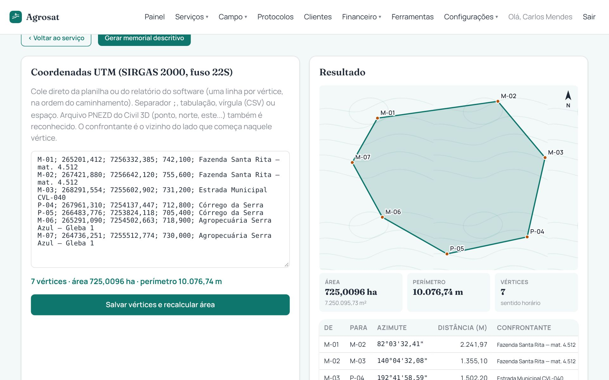
Planta para o AutoCAD
A planta sai pronta
Um clique gera o arquivo DXF que abre no AutoCAD, Civil 3D, BricsCAD e QGIS, com cada item na sua camada.
- Perímetro, marcos e nomes
- Azimute e distância em cada lado
- Confrontantes, quadrícula e norte
- Quadro de coordenadas e carimbo com os dados da Agrosat
- Também sai em PNEZD (Civil 3D), CSV, KML (Google Earth) e script SCR
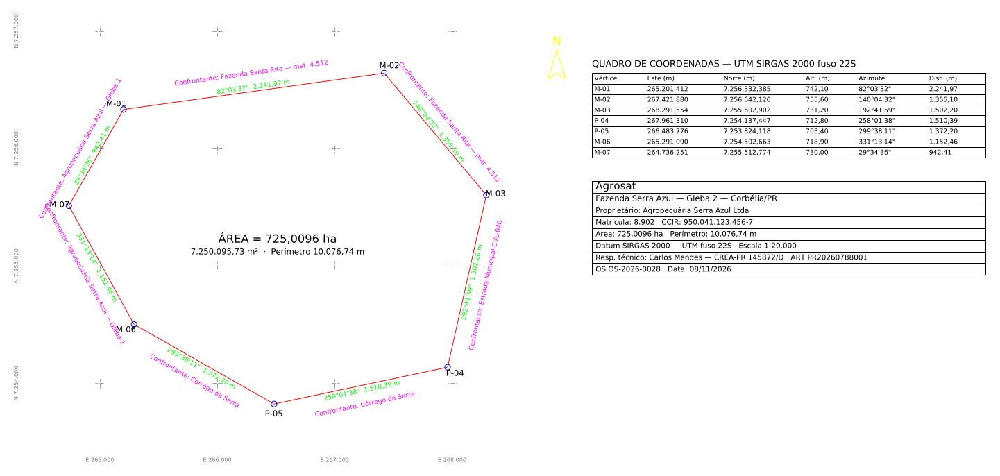
Memorial descritivo
Gerado das coordenadas
- Descrição do perímetro com azimutes, distâncias e confrontantes
- Latitude e longitude de cada marco
- Cabeçalho com nome, endereço e telefone da Agrosat
- Pronto para imprimir, salvar em PDF ou copiar o texto
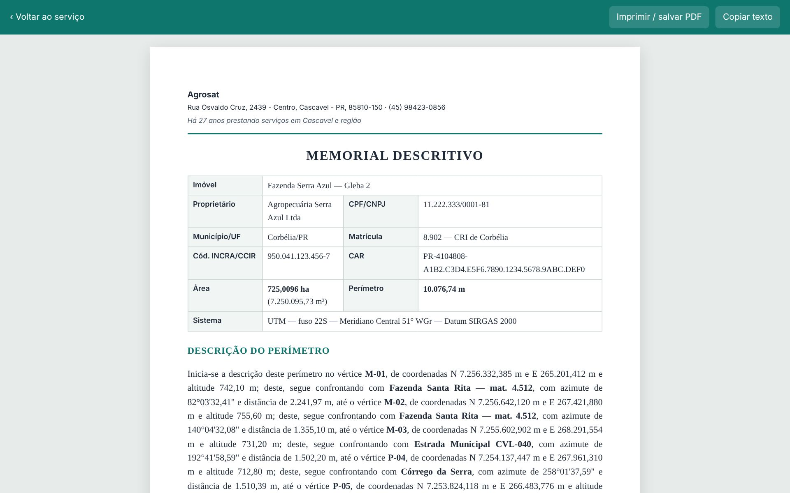
Protocolos
Nada fica esquecido no órgão
- SIGEF/INCRA, cartório, prefeitura e CAR
- Prazo de resposta com aviso quando vence
- Exigências anotadas e a OS volta para a etapa certa
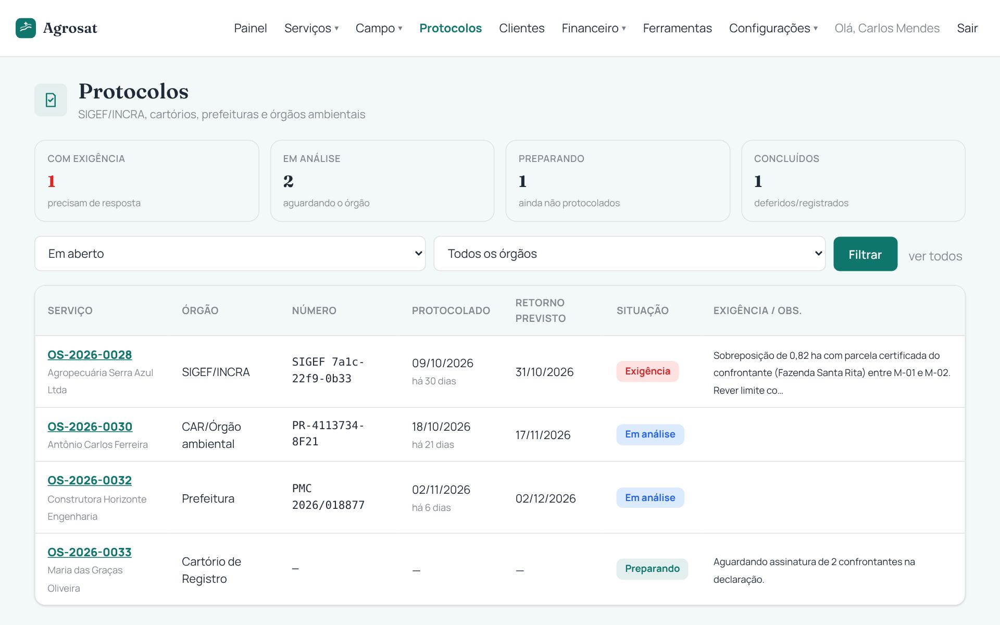
Financeiro
Quanto entra, quanto sai e quanto sobra
- Contas a receber e a pagar com parcelas e despesas fixas
- Cobrança pelo WhatsApp e recibo com valor por extenso
- DRE e lucro por serviço e por tipo de serviço
- Fechamento do mês em planilha para o contador
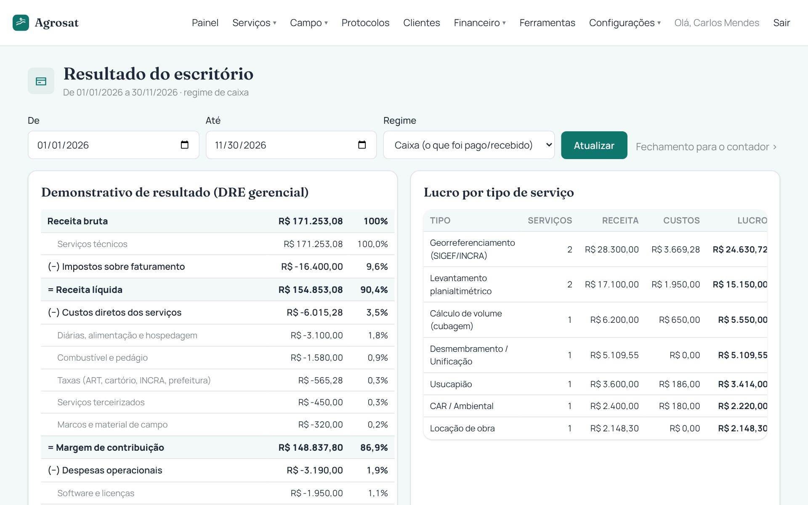
No celular
Para a equipe em campo
Tudo se adapta à tela do celular: a equipe vê a OS, a agenda e os dados do imóvel na fazenda, e o escritório acompanha de qualquer lugar. Também dá para instalar como aplicativo.
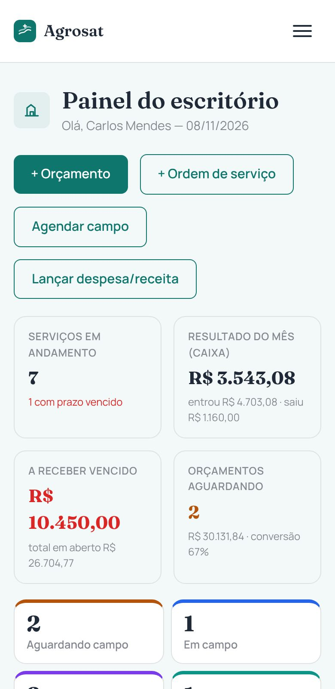
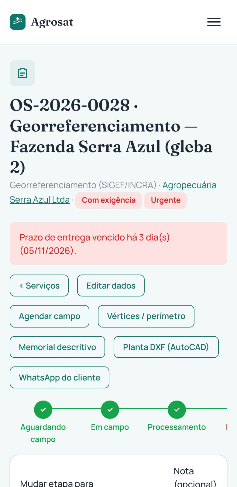
Ferramentas
Os cálculos do dia a dia
- UTM ⇄ latitude/longitude SIRGAS 2000
- Área por coordenadas e irradiação
- Rumo, azimute e conversão de graus
- Alqueire paulista, mineiro, baiano e do norte, tarefa e acre
- Declividade e nivelamento com tolerância
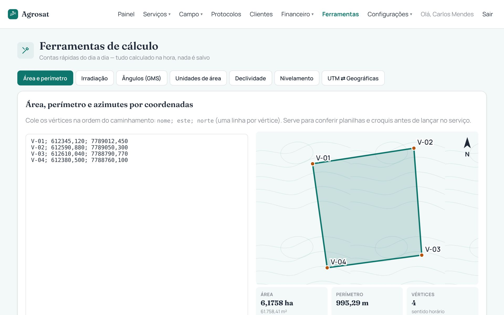
Próximos passos
Do sistema pronto ao primeiro serviço
- Cadastrotipos de serviço e preços, equipe, equipamentos e logo da Agrosat
- Publicaçãosistema no ar, com banco de dados e acesso protegido por senha
- Clientes e serviços em andamentoimportados ou cadastrados junto com a equipe
- Treinamentoorçamento, OS, vértices, planta DXF, memorial e financeiro
Agrosat · Rua Osvaldo Cruz, 2439 - Centro, Cascavel - PR · (45) 98423-0856